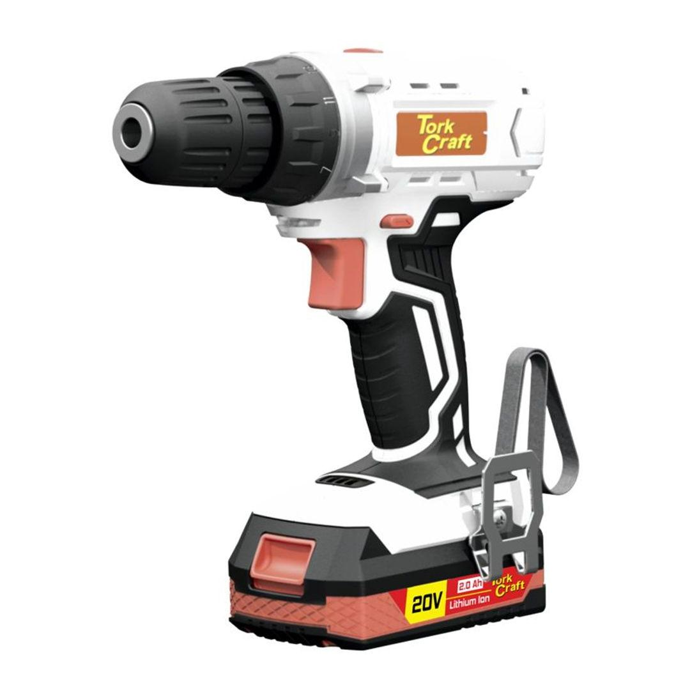
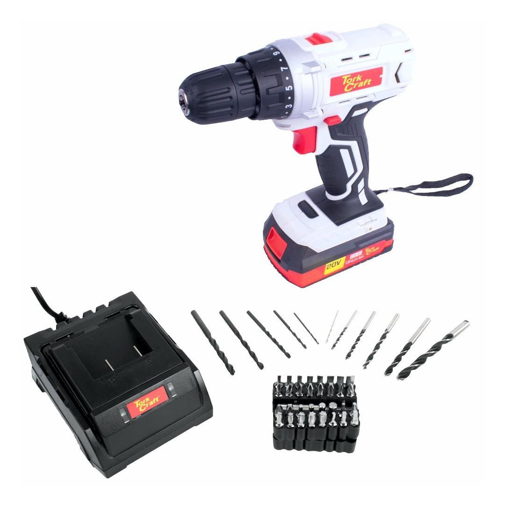
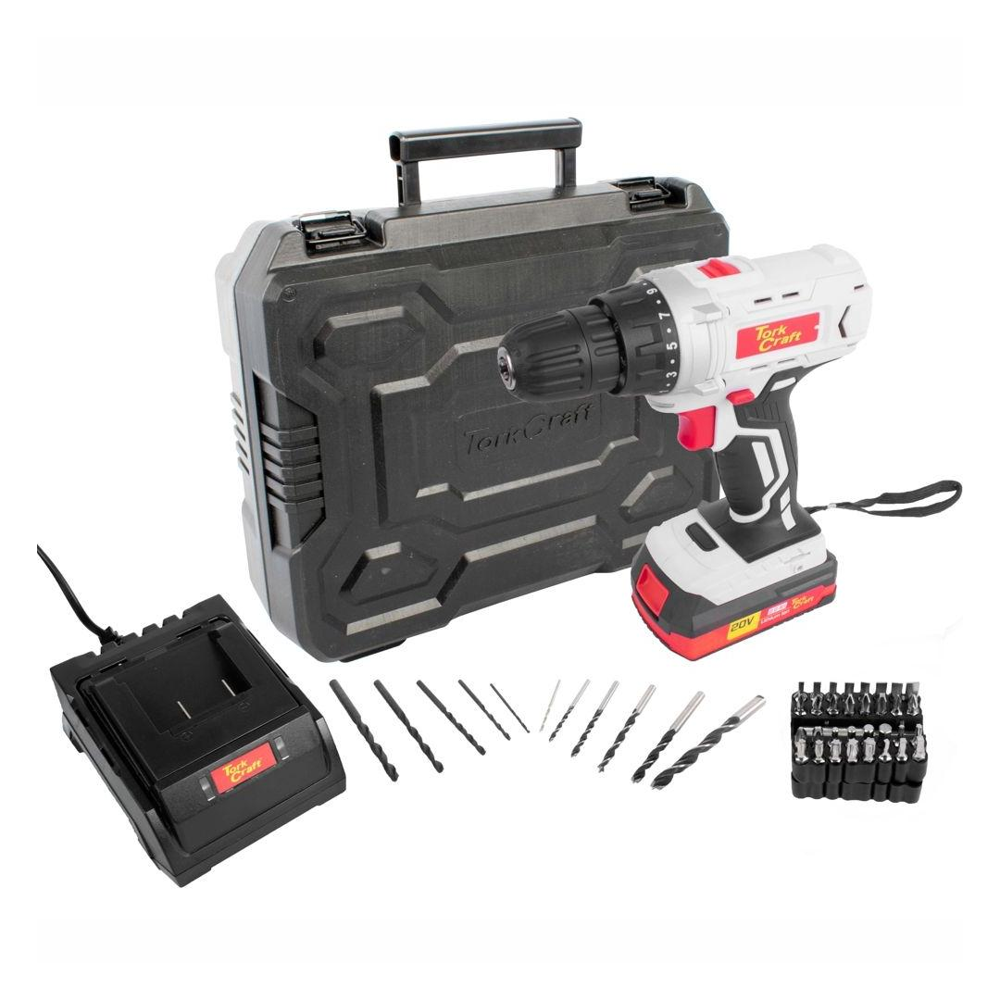
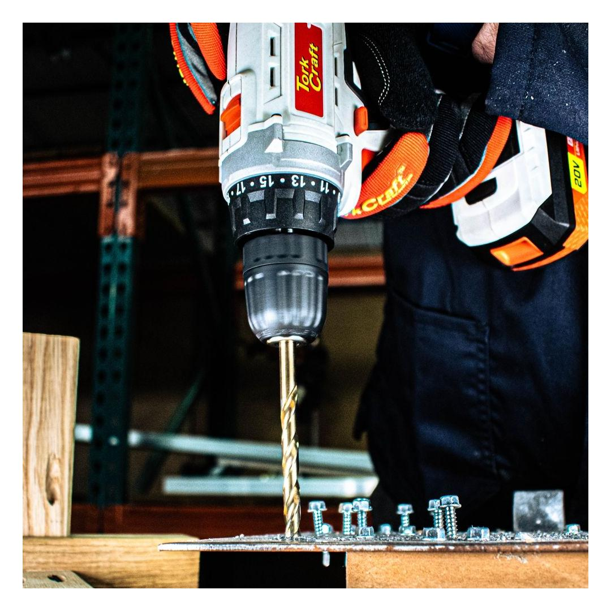
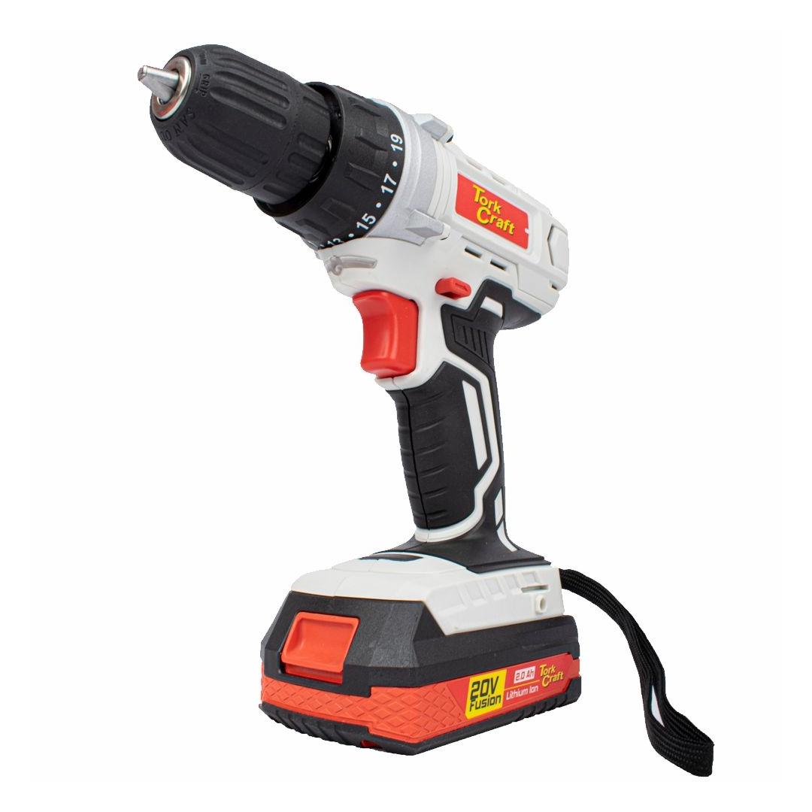

TC20001





The cordless drill is designed with flexibility and durability in mind. The powerful 20V battery delivers performance where it is needed, whether it be drilling or screwdriving.
The built-in LED worklight illuminates the work surface for greater accuracy and the direction of rotation is easily changed with a flick of a switch behind the trigger. Included in the kit: